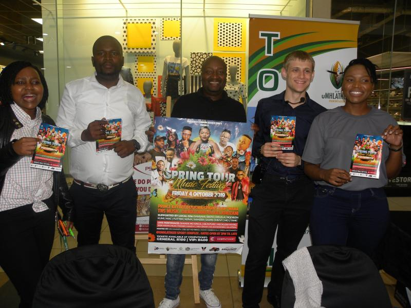

Trademarkia: Driving Organic Growth
I led an evergreen content initiative that generated thousands of new organic users for Trademarkia. This included managing a team of content writers, overseeing topic research, assigning content, and ensuring SEO best practices. As the project lead, I was directly responsible for growth outcomes and editorial strategy. You can see the published work on the Trademarkia Knowledge Hub.
PSN Travel: Tourism Trivia Campaign
I managed a local lead generation initiative at PSN Travel by creating and managing a Tourism Trivia Competition. I not only developed the strategy but also served as the public presenter for the campaign at a major shopping centre. The competition attracted dozens of participants and helped increase visibility and lead generation for the company.
FairyDigital: Multi-Niche Link Building
At FairyDigital, I developed authoritative backlinks for clients spanning diverse industries by leveraging PR platforms. I tailored my approach to align with various brand voices and marketing strategies, managing tasks from outreach to content optimization.
Email Marketing Success at PSN Travel & Trademarkia
I managed email marketing campaigns at PSN Travel using Mailchimp, where I helped improve audience engagement through targeted newsletters. Currently, at Trademarkia, I co-manage our email communications strategy. My contributions have led to a noticeable increase in open rates and user engagement through optimized subject lines.
Content Writing & On-Page SEO Experience
I wrote hundreds of articles for My Content Pal, FairyDigital, Grassroots Content, Captain Words, and for freelance clients. This experience helped me develop strong skills in on-page SEO and content creation, improving organic traffic and engagement across multiple client sites.